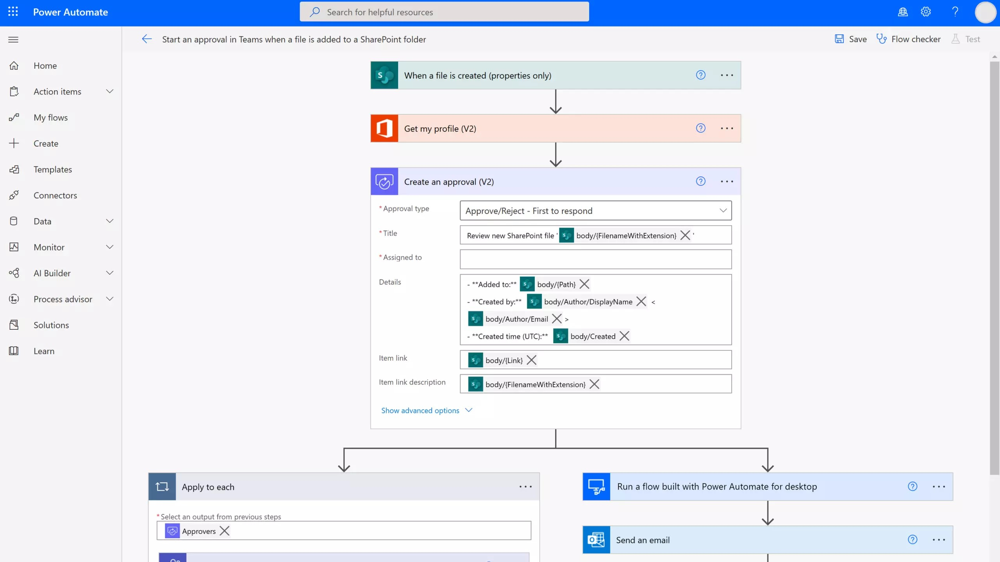

End-User Development - EUD
Companies digitize processes without burdening the central IT department.
Typical for this: visual Low-Code / No-Code platforms.



Today: AI generates not only text, but also code!